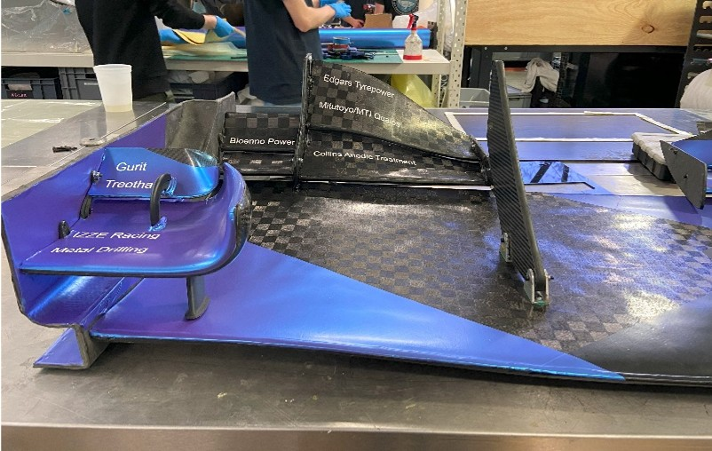
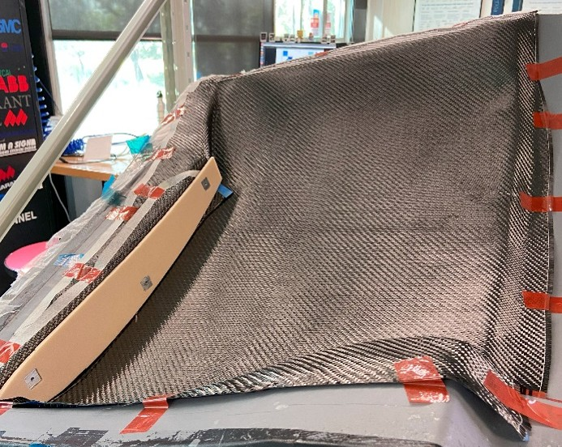
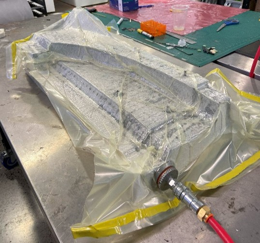
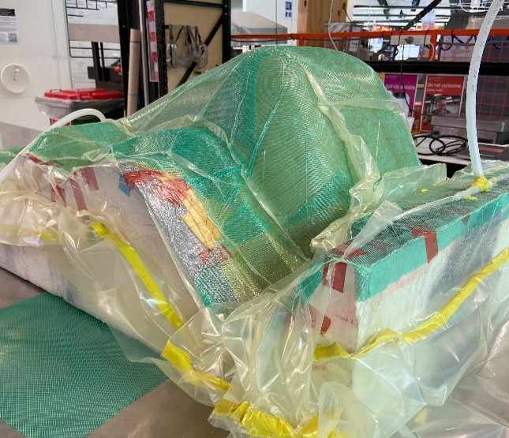
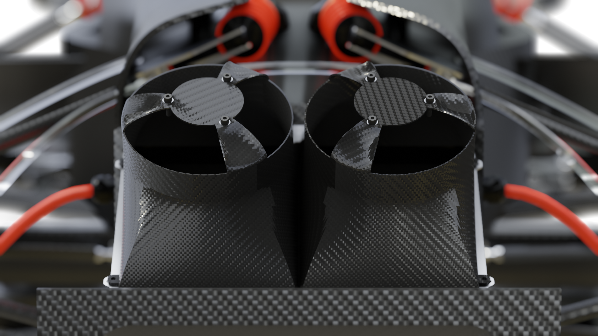

Overview

During my two years at Monash Motorsport, I worked on Formula SAE vehicle development, focusing on aerodynamic component design, composite manufacturing and vehicle dynamics analysis.
Aerodynamic Design

Rear Wing Design
Worked in a small team to design a high-downforce, lightweight rear wing that complies with Formula SAE rules.
CFD Validation
Started project to validate CFD model using Ansys Fluent and compared pressure predictions with wind tunnel results from pressure taps and rakes.
Composite Manufacturing



Fabricated 15+ complex composite structures using wet-lay and infusion methods with Kevlar and carbon fibre weaves.
Fan Shrouds


Fabricated fan shroud mould and aided with layup process.
Vehicle Dynamics
Simulation & Performance
Used vehicle simulations to predict lap times and assess the effects of setup changes on performance.
Testing under Pressure
Responded to unexpected challenges during vehicle testing and competition events.